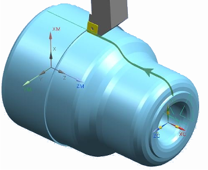

Blank Contour Zig
What is it?
Use the Blank Contour Zig cut strategy to better control roughing cut depths when you start machining with irregular shaped castings or parts made of difficult to machine materials. NX follows the contour of the blank and not the part.

Why should I use it?
This cut strategy enables you to remove the initial irregular casting skin, ensuring that the subsequent operations start from a well-defined IPW.
Where do I find it?
|
Application |
Manufacturing |
|
Toolbar |
Insert→Create Operation |
|
Menu |
Insert→Operation |
|
Location in dialog box |
Roughing operation dialog box→Cut Strategy group→Strategy list→Blank Contour Zig |